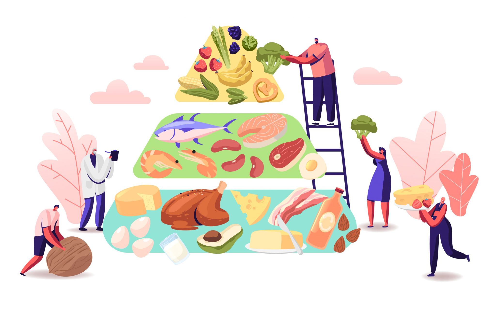

Reduir el consum d'aliments: rics en sodi, greixos trans i saturats i sucres afegits. Incloure aliments rics en proteïnes als menjars: llet, ous, carns, peix blau, llegums i altres. Prendre verdures i fruites, excepte contraindicació mèdica, sempre seran beneficioses
